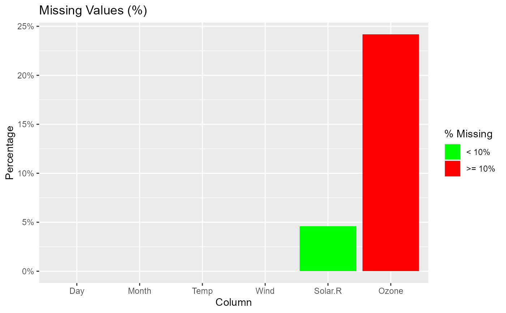

Screen data and return details such as variable names, class, levels and
missing values. plot.ds_screener() creates bar plots to visualize
of missing observations for each variable in a data set.
Usage
ds_screener(data)
# S3 method for class 'ds_screener'
plot(x, ...)Value
ds_screener() returns an object of class "ds_screener".
An object of class "ds_screener" is a list containing the
following components:
- Rows
Number of rows in the data frame.
- Columns
Number of columns in the data frame.
- Variables
Names of the variables in the data frame.
- Types
Class of the variables in the data frame.
- Count
Length of the variables in the data frame.
- nlevels
Number of levels of a factor variable.
- levels
Levels of factor variables in the data frame.
- Missing
Number of missing observations in each variable.
- MissingPer
Percent of missing observations in each variable.
- MissingTotal
Total number of missing observations in the data frame.
- MissingTotPer
Total percent of missing observations in the data frame.
- MissingRows
Total number of rows with missing observations in the data frame.
- MissingCols
Total number of columns with missing observations in the data frame.
Examples
# screen data
ds_screener(mtcarz)
#> -----------------------------------------------------------------------
#> | Column Name | Data Type | Levels | Missing | Missing (%) |
#> -----------------------------------------------------------------------
#> | mpg | numeric | NA | 0 | 0 |
#> | cyl | factor | 4 6 8 | 0 | 0 |
#> | disp | numeric | NA | 0 | 0 |
#> | hp | numeric | NA | 0 | 0 |
#> | drat | numeric | NA | 0 | 0 |
#> | wt | numeric | NA | 0 | 0 |
#> | qsec | numeric | NA | 0 | 0 |
#> | vs | factor | 0 1 | 0 | 0 |
#> | am | factor | 0 1 | 0 | 0 |
#> | gear | factor | 3 4 5 | 0 | 0 |
#> | carb | factor |1 2 3 4 6 8| 0 | 0 |
#> -----------------------------------------------------------------------
#>
#> Overall Missing Values 0
#> Percentage of Missing Values 0 %
#> Rows with Missing Values 0
#> Columns With Missing Values 0
ds_screener(airquality)
#> ----------------------------------------------------------------------
#> | Column Name | Data Type | Levels | Missing | Missing (%) |
#> ----------------------------------------------------------------------
#> | Ozone | integer | NA | 37 | 24.18 |
#> | Solar.R | integer | NA | 7 | 4.58 |
#> | Wind | numeric | NA | 0 | 0 |
#> | Temp | integer | NA | 0 | 0 |
#> | Month | integer | NA | 0 | 0 |
#> | Day | integer | NA | 0 | 0 |
#> ----------------------------------------------------------------------
#>
#> Overall Missing Values 44
#> Percentage of Missing Values 4.79 %
#> Rows with Missing Values 42
#> Columns With Missing Values 2
# plot
x <- ds_screener(airquality)
plot(x)
